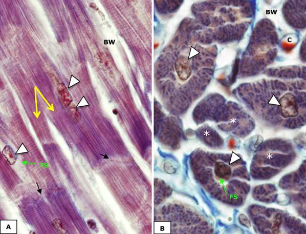

Hartspierweefsel:
In cardiale myocyten zullen ook de myofibrillen het grootste gedeelte van het sarcoplasma innemen en zie je typische dwarsstreping.
Omdat hartspiercellen embryonaal ontstaan uit éénkernige myoblasten die slechts zeer beperkt fusioneren met elkaar, hebben hartspiercellen meestal slechts 1 of soms 2 kernen. Deze is of zijn centraal in de cel gelegen en worden omringd door talrijke mitochondriën. Omdat op deze plaats geen myofibrillen voorkomen, wordt deze zone rond de kern van een hartspiercel het ‘fibrillenvrij sarcoplasma’ genoemd.
Kenmerkend voor hartspiercellen is dat deze veel kleiner zijn dan skeletspiercellen en een aantal stompe vertakkingen vertonen. Op die manier is een hartspiercel in de lengterichting verbonden met verscheidene naburige hartspiercellen. Op deze plaatsen vinden we intercalaire schijven, die zorgen voor de stevige verbinding (desmosomen) en de communicatie (gap junctions) die het mogelijk maakt dat de spiercellen in het hart gecoördineerd samentrekken.
Rondom de hartspiercellen vind je bindweefsel met veel bloedvaatjes (capillairen).
In cardiale myocyten zullen ook de myofibrillen het grootste gedeelte van het sarcoplasma innemen en zie je typische dwarsstreping.
Omdat hartspiercellen embryonaal ontstaan uit éénkernige myoblasten die slechts zeer beperkt fusioneren met elkaar, hebben hartspiercellen meestal slechts 1 of soms 2 kernen. Deze is of zijn centraal in de cel gelegen en worden omringd door talrijke mitochondriën. Omdat op deze plaats geen myofibrillen voorkomen, wordt deze zone rond de kern van een hartspiercel het ‘fibrillenvrij sarcoplasma’ genoemd.
Kenmerkend voor hartspiercellen is dat deze veel kleiner zijn dan skeletspiercellen en een aantal stompe vertakkingen vertonen. Op die manier is een hartspiercel in de lengterichting verbonden met verscheidene naburige hartspiercellen. Op deze plaatsen vinden we intercalaire schijven, die zorgen voor de stevige verbinding (desmosomen) en de communicatie (gap junctions) die het mogelijk maakt dat de spiercellen in het hart gecoördineerd samentrekken.
Rondom de hartspiercellen vind je bindweefsel met veel bloedvaatjes (capillairen).

Beelden van een overlangse (A) en een dwarse (B) doorsnede van hartspiercellen. Cellen hebben één of twee kernen die centraal liggen in de cel (pijlpunten) en omringd zijn door fibrillenvrij sarcoplasma (FS). Rondom de spiercellen bevindt zich bindweefsel (BW) waarin capillairen (C) te zien zijn.
(A) Hartspiercellen tonen vertakkingen (gele pijlen) en zijn door middel van intercalaire schijven (zwarte pijlen) met elkaar verbonden. (B) In dwarse doorsneden zie je de myofibrillen als sterk gekleurde stippen in het cytoplasma. Merk op dat enkele cellen (asterisken) niet door de kern zijn aangesneden.
(A) Hartspiercellen tonen vertakkingen (gele pijlen) en zijn door middel van intercalaire schijven (zwarte pijlen) met elkaar verbonden. (B) In dwarse doorsneden zie je de myofibrillen als sterk gekleurde stippen in het cytoplasma. Merk op dat enkele cellen (asterisken) niet door de kern zijn aangesneden.
Vordering zelfstudie spierweefsel: